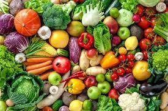

QUAL A IMPORTÂNCIA DE MANTER UMA ALIMENTAÇÃO SAUDÁVEL?

A alimentação saudável é um estilo de vida que auxilia no condicionamento físico, mental, no combate e na prevenção de doenças, infecções, entre outros aspectos da saúde. Isso se dá porque vários dos alimentos saudáveis proporcionam uma melhora no sistema imunológico levando a um maior bem-estar e diminuindo as chances de contrair novas doenças. Vale lembrar que apenas se alimentar saudável não vai curar ou prevenir doenças de uma vez sem ajuda de outras ações – é preciso também manter uma boa prática de atividades físicas, atualizar com frequência seus exames e conhecer como funciona seu organismo... Já não é novidade para ninguém de que os alimentos processados não contribuem em nada para uma vida saudável, pois não há derivação direta de algum alimento natural, ou seja, seu formato não mantém as características que a natureza criou e eles não oferecem nutrientes e vitaminas que o seu corpo precisa. Tudo isso é alterado com processamento de vários outros produtos, para conservar, produzir em maior escala e em muitas vezes deixar ele mais acessível. Essa praticidade de se alimentar com produtos processados é uma realidade de milhares de pessoas no Brasil e no mundo, pois a correria do dia a dia não ajuda muito na organização. Por essa razão pode parecer impossível começar uma rotina diferente. – Faça pelo menos 3 refeições (café da manhã, almoço e jantar) e 2 lanches saudáveis por dia. Não pule as refeições. – Inclua diariamente nas refeições 6 porções do grupo dos cereais (arroz, milho, trigo, pães e massas), tubérculos — como as batatas — e raízes — como a mandioca/macaxeira/aipim. Dê preferência aos grãos integrais e aos alimentos naturais. – Coma diariamente pelo menos 3 porções de legumes e verduras como parte das refeições e 3 porções ou mais de frutas nas sobremesas e nos lanches. – Coma feijão com arroz todos os dias ou, pelo menos, 5 vezes por semana. Esse prato brasileiro é uma combinação completa de proteínas e bom para a saúde. – Consuma diariamente 3 porções de leite e derivados e 1 porção de carnes, aves, peixes ou ovos. Retirar a gordura aparente das carnes e a pele das aves antes da preparação torna esses alimentos mais saudáveis! – Consuma, no máximo, 1 porção por dia de óleos vegetais, azeite, manteiga ou margarina. Fique atento aos rótulos dos alimentos e escolha aqueles com menores quantidades de gorduras trans. – Evite refrigerantes e sucos industrializados bolos, biscoitos doces e recheados, sobremesas doces e outras guloseimas como regra da alimentação. – Diminua a quantidade de sal na comida e retire o saleiro da mesa. Evite consumir alimentos industrializados com muito sal (sódio) como hambúrguer, charque, salsicha, linguiça, presunto, salgadinhos, conservas de vegetais, sopas, molhos e temperos prontos. – Beba pelo menos 2 litros (de 6 a 8 copos) de água por dia. Dê preferência ao consumo de água nos intervalos das refeições. – Torne sua vida mais saudável. Pratique pelo menos 30 minutos de atividade física todos os dias e evite as bebidas alcoólicas e o fumo. Mantenha o peso dentro de limites saudáveis.